Fortinet Enterprise Networking & Security Daily Study — 2026-09-09 08:00
Validation: 12 products, 50 questions, 12 SVG + 12 draw.io, answer positions balanced. 30-day exclusions applied. Depth: FAIL — compact publication; long-form depth target not met.1. FortiGate: Central SNAT: post-policy translation, ordered matching, and IP-pool selection
Fortinet source
Central SNAT is disabled by default; when enabled, IPv4 policy NAT is skipped and source translation is controlled by central-snat-map. FortiGate evaluates central SNAT entries from top to bottom and the first match selects the translation.
Evidence: Separate policy match, central-SNAT match, and translated egress/session evidence.
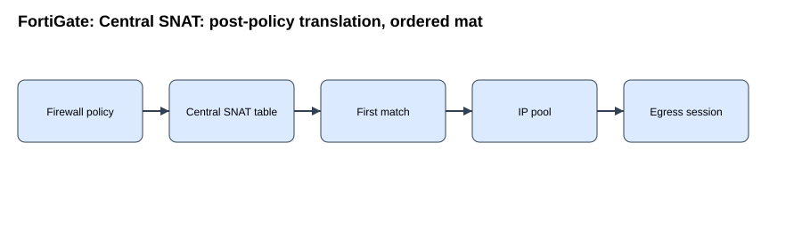
draw.io2. FortiManager: Script execution history: target scope, Task Monitor evidence, and safe re-run semantics
Fortinet source
FortiManager records script execution history per managed device and exposes the execution log through Task Monitor. Script type determines whether the target is a device, group, or policy package; target scope is part of the transaction.
Evidence: Separate script definition, target selection, task result, returned CLI output, and post-change device state.
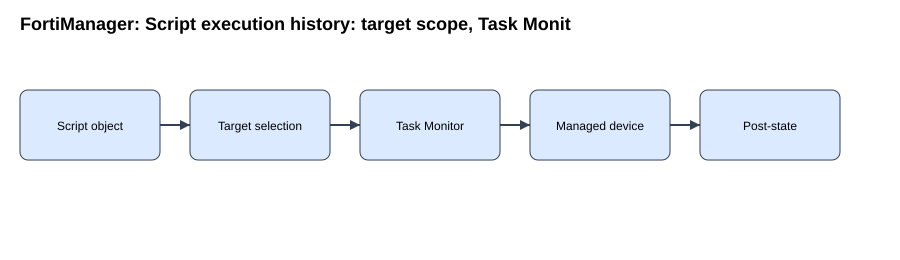
draw.io3. FortiAnalyzer: Analyzer–Collector collaboration: binary log retention, forwarding, analytics, and event-evaluation boundaries
Fortinet source
Collector mode offloads log receiving and archives original binary logs while the Analyzer focuses on analysis and reports. Collector receipt proves branch-to-Collector delivery but not forwarding to the Analyzer or Analyzer database ingestion.
Evidence: Follow device send, Collector receive/archive, Collector forward, Analyzer ingest, then Analyzer analytics/event/report consumption.
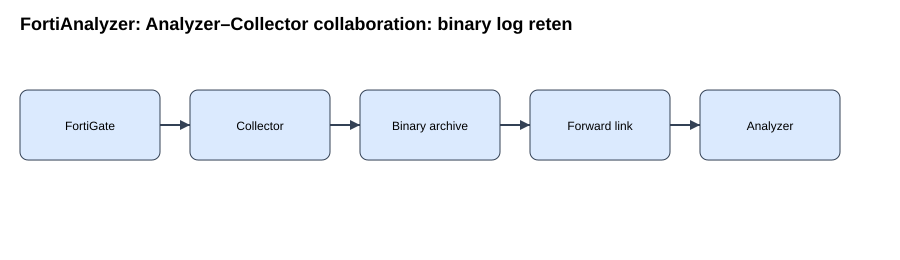
draw.io4. FortiSwitch: DHCP snooping: trust boundaries, binding database, Option 82, and DAI dependency
Fortinet source
DHCP snooping is enabled per VLAN and switch interfaces are untrusted by default. FortiSwitch validates DHCP messages from untrusted ports and builds a binding database for leased host addresses.
Evidence: Interpret trusted-port state, DHCP message validation, binding creation, and later DAI use as separate boundaries.
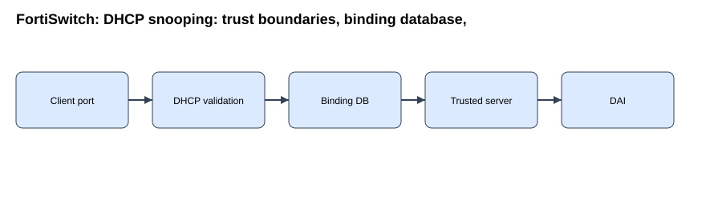
draw.io5. FortiAP: Rogue AP suppression: on-wire detection, dedicated monitor radio, and bidirectional deauthentication
Fortinet source
Rogue suppression transmits deauthentication frames toward rogue clients while impersonating the rogue AP and toward the rogue AP while impersonating clients. Suppression requires rogue monitoring with on-wire detection and a radio in Dedicated Monitor mode.
Evidence: Distinguish classified rogue state, suppression state, monitor-radio prerequisites, transmitted deauth frames, and actual client disconnects.
draw.io6. FortiNAC: High availability: shared-IP versus routed-subnet failover, management process, and database replication
Fortinet source
FortiNAC HA uses a management process to mirror critical information, control services, and determine which peer is in control. Database replication health is a separate state from successful HA form submission or peer reachability.
Evidence: Separate management-process health, database replication, control role, shared-IP ownership, and application reachability.
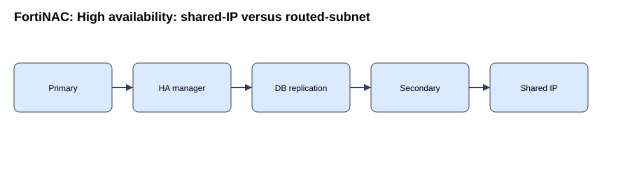
draw.io7. FortiNAC-F: N+1 failover groups: direct/indirect health checks, standby promotion, and shared standby capacity
Fortinet source
FortiNAC 7.6 N+1 allows one standby CA to back multiple primary CAs under FortiNAC-M. The secondary CA performs the health checks; FortiNAC-M is not the component deciding primary health.
Evidence: N+1 reduces standby count but introduces a capacity boundary because one standby cannot replace multiple failed primaries at the same time.
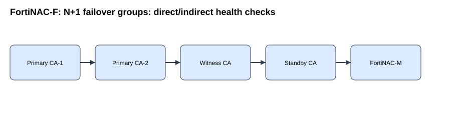
draw.io8. FortiAuthenticator: REST API access: versioned resource paths, object identity, and response-boundary verification
Fortinet source
FortiAuthenticator REST resources use the versioned form https://server/api/v1/resource/. Browser GET access is not equivalent to PUT/POST automation; scripted clients must send the correct HTTP method, body, and authentication.
Evidence: Separate TLS reachability, API authentication/authorization, resource path, HTTP response semantics, and downstream service behavior.
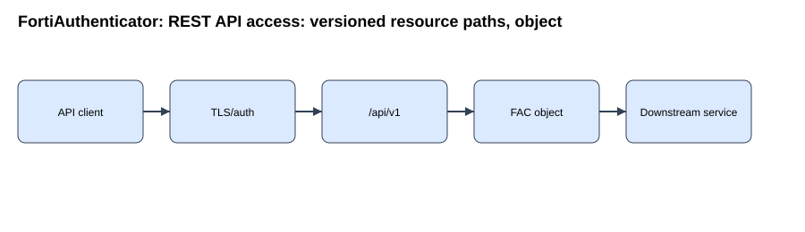
draw.io9. FortiPAM: Secret checkout/check-in: exclusive lease, visibility permissions, and concurrency control
Fortinet source
Checking out a secret gives one user exclusive access for a limited period when Requires Checkout is enabled. Other approved users must wait for check-in or lease expiry while another user holds the checkout.
Evidence: Distinguish folder/secret permission, checkout ownership, password visibility, lease expiry, and check-in release.
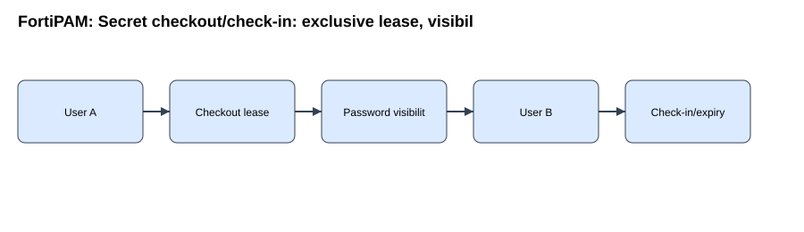
draw.io10. FortiSIEM: Business Services: CMDB membership, incident impact tagging, and service-centric triage
Fortinet source
A FortiSIEM Business Service groups CMDB devices and applications that serve a common business purpose. Incidents involving member devices can be tagged with impacted Business Services, enabling service-centric triage.
Evidence: Separate CMDB membership, event parsing, incident creation, business-service tagging, and dashboard/drilldown interpretation.
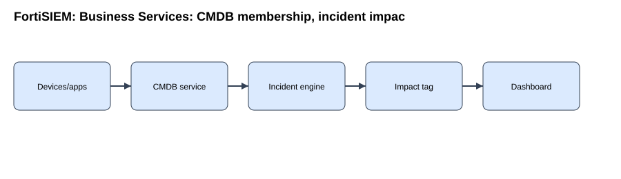
draw.io11. FortiSASE: Secure Private Access client-to-client flow: PoP steering, SPA Connector hairpin, and IPv4 constraints
Fortinet source
Two remote FortiClient endpoints can communicate through the SPA Connector even when attached to different FortiSASE Security PoPs. The client-to-client path is client A to FortiSASE, to SPA Connector, back to FortiSASE, then to client B.
Evidence: Separate user authentication, endpoint tunnel, SPA Connector reachability, hairpin steering, and destination-client delivery.
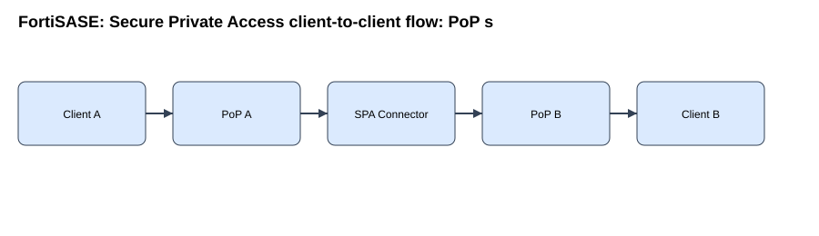
draw.io12. Fortinet Secure SD-WAN: BGP route-tags in SD-WAN rules: destination property, route-map signaling, and member independence
Fortinet source
BGP communities can be mapped locally to route-tags and used as dynamic SD-WAN rule match criteria. In the documented FortiOS 7.4 behavior, a route-tag is a property of the destination prefix, not the specific BGP path that carried the community.
Evidence: Keep viable BGP paths visible, then distinguish route-tag matching from the SD-WAN member-selection strategy.
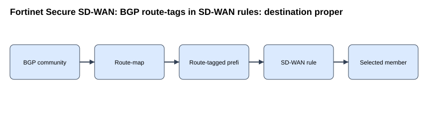
draw.io50-question exam